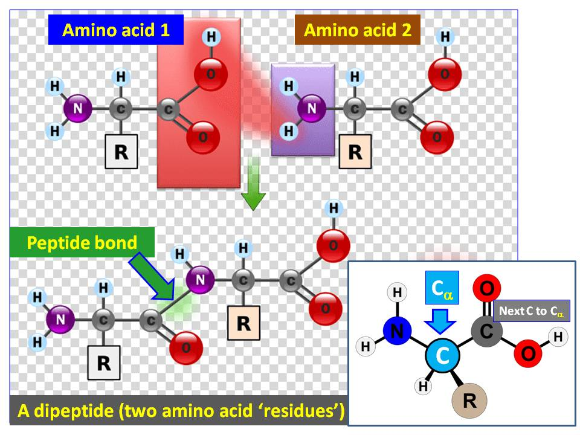

The Geometry of Proteins
The thumbnail image is what's called a Ramachandran plot. Let's figure out what's going on there. Here's a handy image:
The image shows how amino acids bond together, and repeating this process for more
amino acids on either end will make a protein. Look at the 'alpha' carbon, in light blue
on the bottom right. There is an N and a C coming off. The 'torsional' angles
that these two things attach at are called psi and phi respectively. There are some
physically viable pairs $(\varphi,\psi)$. The subset of these that appear in some
experimental sample is plotted in the Ramachandran plot.

There are two dominant structures that proteins fold into: $\alpha$-helices and $\beta$-sheets.
These regions are clearly marked on the above Ramachandran plot, and you can stare at this and
figure out why they would cause helices or sheets.